취미, 여행, 삶에 대한 기록.
클릭스 파워 키보드
스마트폰에 착 붙는 보조배터리, 그런데 키보드기능까지 있는 제품이 없을까? 싶어 찾아보았다. 있었다.
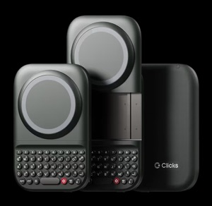
샤오미 유리창 청소기 후기
샤오미 미홀 C66S 스마트 유리창 로보청소기 사용기. 2년차 실사용 후기- 쓸만하다.
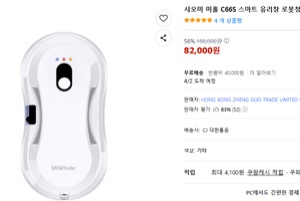
OMEGA 007 NTTD
내 마지막 시계질이자 종결템. 로망이었던 최후의 덕질. 오메가 씨마 007 노 타임 투 다이 에디션을 소개한다.
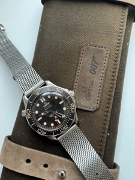
다크나이트 트릴로지
M-DISC 를 굽는게 메인이었다. 기왕 블루레이 산김에 아내 선물과 내가 소장하고 싶었던 다크나이트 트릴로지까지.
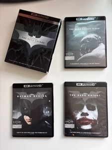
아내와 결혼전 갔었던 일본
덕후인 나에게 일본은 로망 그 자체인 나라였다. 아키하바라에서 모든 시간을 보내고 싶었지만 여친(현 아내)과 함께였다.
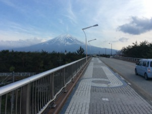
엑스 세탁
계정 하나 너무 오래 썼다. 세탁기 한번 돌릴 때가 되었다.
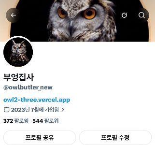
일하기 싫으시군요
동네에 온 붕어빵 트럭. 기계적인 친절함 너머로 피부를 타고 느껴지는 그 귀찮음. ...앞으로 안 가야지.
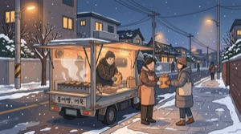
클로드 - 코옵 후기
걸어다니면서 아이폰 음성으로 일정 추가부터 게임 무기 추가까지. 코옵 알고 나서 평생 못 끊을 것 같은 클로드 활용기.
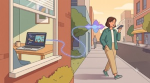
체인소맨: 레제편 2회차
극장에서 감탄하며 봤던 레제편을 딸아이 덕에 애플TV로 다시 관람. 큰 화면이 아니라 감흥은 덜했지만 그래도 나쁘진 않았다.
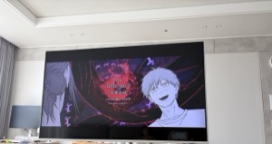
추석 특집
뷔페에서 감귤주스 못 따르던 꼬마를 도와줬더니, 그 이후로 지나갈 때마다 "저 아저씨야?"하며 빤히 쳐다보던 귀여운 이야기.
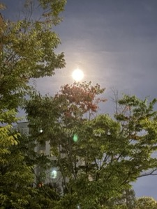
비아냥이 시작되었군.
2100사토시에 팔겠다고 하자마자 P2E 사기라는 비아냥이 날아왔다. 싸울 이유는 없다. 그래도 시작한 이상 끝은 볼 것이다.
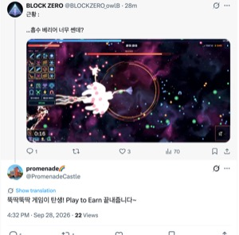
로그라이크 게임제작(3)
뱀서라이크로 갈아탄 뒤 반응이 확 달라졌다. 여기저기서 올라오는 클리어 인증샷들, 그리고 정식버전까지 남은 할 일 목록.
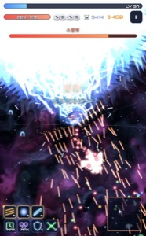
TAG HEUER CARRERA
어릴 때부터의 로망이었던 구형 까레라 칼리버5, 드라마 '도깨비' 협찬 시계였다는 걸 뒤늦게 알고 나서. 현금 주고 산 추억의 콜렉션.
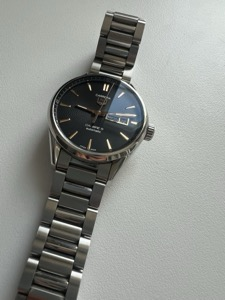
로그라이크 게임 제작(2)
기체, 퀘스트, 글리프 조합까지 다 넣었는데 반응은 시큰둥. '아 망했어요'를 인정하고 검증된 장르 뱀서라이크로 갈아타기로 결정.
로그라이크 게임 제작(1)
오락실 스타일 비행슈팅+스토리로 시작했지만 스토리는 폐기, 로그라이크로 전면 개편. 바이브코딩으로 코드 몰라도 게임을 만드는 중.
VICTORINOX EVOKE ALOX
제품 분류는 엄연히 "주방용품". 스위스군 정식 납품 브랜드 빅토리녹스의 밀리터리 디자인에 홀려 컬렉션에 새로 들인 녀석.
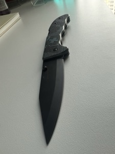
홍대 데이트
합정에서 시작해 피오니 딸기케이크, 꼬치집, 노맛 칵테일 와인바까지. 오래간만에 아내와 만끽한 조촐하지만 좋았던 하루.
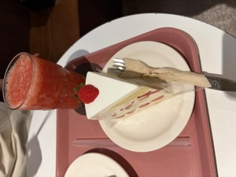
맥북 네오 사용 후기
저렴하고 이쁜 맥북을 처음 써보며 겪은 트랙패드 예찬, 클로드와의 멀티태스킹, 그리고 유비키 암호화와 포맷을 반복하다 결국 에어갭 노트북을 따로 둔 이야기.
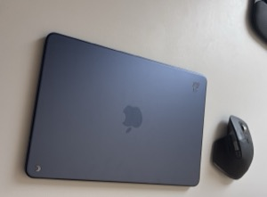
BOKER KNIFE
호신용이라 산다 해놓고 결국은 진열용. 중2병에게 구매를 강요당한 독일 보커 나이프, 다음 목표는 다마스커스강.
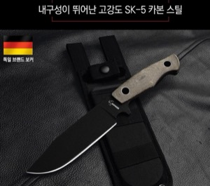
애완 달팽이
딸아이 등쌀에 키우기 시작한 달팽이. 벽 타고 지붕까지 오르며 꿀렁꿀렁 움직이는 모습이 은근 귀엽다.
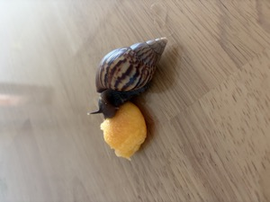
서울랜드 나들이
매번 바람 때문에 못 탔던 스카이X를 드디어 탔다. 번지점프에 필적하는 짜릿함, 딸아이도 타고 나서는 또 타자고 졸라댔다.
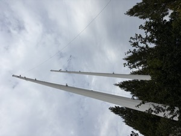
딸아이와 데이트
만화방에서 딸과 나눈 체인소맨 토론. "천사의 악마는 왜 악마야?" 작가 마음이라 답했지만, 생각해보면 꽤 합리적인 질문이었다.
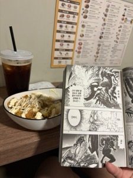
10년전의 홍콩거리
중국 합병 전, 느와르 감성 그대로였던 홍콩. 낡은 아파트와 명품 백화점 사이 그 묘한 분위기, 그리고 마지막 날의 게 요리.
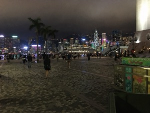
만화 제작후기
뉴비 시절부터 비트코이너가 되기까지, AI와 포토샵으로 만든 5화짜리 부엉만화 제작 뒷이야기.
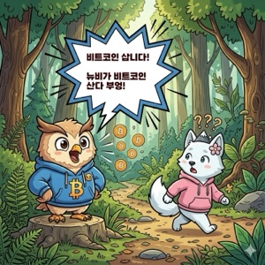
곤충박물관
딸아이와 곤충박물관 나들이. 웜을 손에 올리기 싫었는데 딸의 한마디 "아빠, 쫄?"에 결국 올렸다.
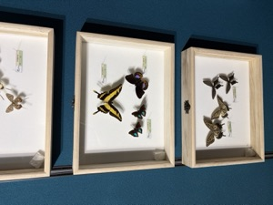
누가 좀 만들어줘
구글 프로젝트 아라를 떠올리다가 든 생각. SD카드, 유비키, 콜드월렛을 모듈로 꽂는 기기가 있다면 그게 완벽한 내 기기 아닐까.
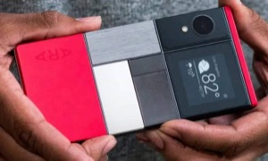
P.O.W
돈을 버는 재미 vs 쓰는 재미. 결론은 버는 재미 승. 내 개인키 안에 쌓여가는 사토시에 흥분하라.
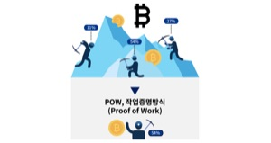
게임 제작기
부엉퀴즈 게임과 굴삭기 게임을 AI로 만들며 겪은 밸런싱, 버그, PVP 이야기. 이제 세 번째 게임을 준비 중이다.
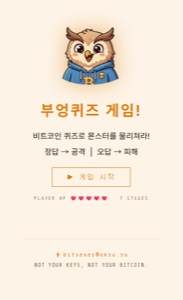
GROUP
모임을 만든 지 1년, 신뢰와 유대감으로 다져진 시간과 우리의 상징을 새긴 카드에 대한 기록.
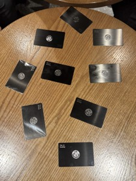